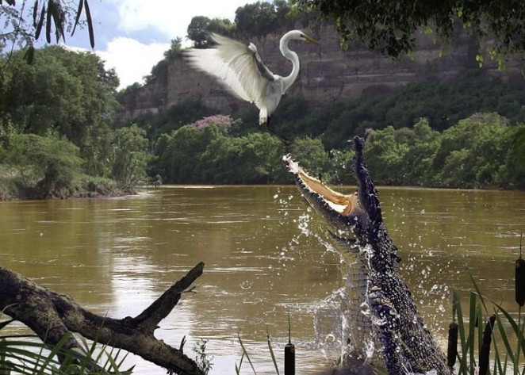
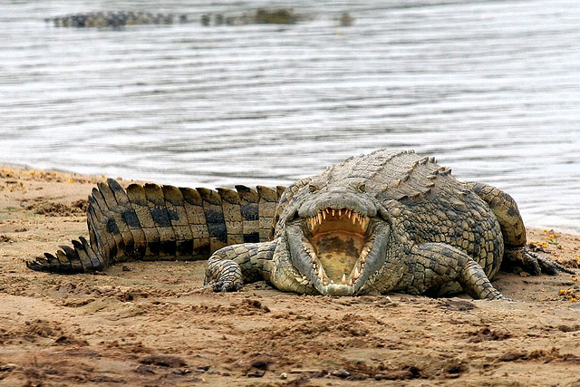

Крокодилы

Крокодилы — это своеобразная группа пресмыкающихся со специфическим образом жизни. В мире насчитывается 22 вида крокодилов, которые составляют отдельный отряд. По строению тела крокодилы сильно отличаются от прочих рептилий и в своем происхождении ближе всех стоят к динозаврам. За это в классе Рептилий их даже выделяют в отдельный подкласс Архозавры (то есть Древние Ящеры).
Крокодилов принято делить на настоящих и аллигаторов (к которым также относятся и кайманы), но внешне они отличаются лишь тем, что у аллигаторов морда с широким тупым концом, а у крокодилов она сужена.
Размер разных видов варьирует от 1,5 м в длину у тупорылого крокодила до 10 м у нильского крокодила. Все крокодилы имеют вытянутое, немного уплощенное тело, короткую шею и большую голову с сильно удлиненной мордой. Лапы у крокодилов короткие и расположены, как у всех рептилий, по бокам тела, а не под туловищем, как у птиц и млекопитающих. Такое расположение конечностей накладывает отпечаток на способ передвижения крокодилов.
Лапы крокодила имеют плавательные перепонки.
У всех крокодилов имеется длинный и толстый хвост. Хвост сплющен с боков и выполняет функцию руля, двигателя и терморегулятора. Характерно, что глаза и ноздри расположены у крокодилов на верхней части черепа. Это позволяет животным дышать и видеть в то время, когда их тело полностью погружено в воду. К тому же крокодилы способны задерживать дыхание и могут находится до 2 часов под водой, не всплывая.
Мозг у крокодилов маленький, однако они являются самыми разумными из всех пресмыкающихся. Есть у них и еще одна прогрессивная особенность. Крокодилы — холоднокровные животные. Но оказалось, что крокодилы,напрягая мышцы тела, могут произвольно разогревать кровь так, что их температура на 5-7 градусов превышает температуру окружающей среды.
Тело крокодилов покрыто толстой кожей. Вместо мелких чешуек, покрывающих тело других рептилий, у крокодилов имеются крупные щитки. Их форма и размер на разных участках тела отличаются и формируют неповторимый узор. У многих видов крокодилов щитки дополнительно укреплены подкожными костными пластинами, которые на голове срастаются с костями черепа. Эти пластины создают своеобразную броню, делая тело крокодила неуязвимым для атаки извне. Окраска у всех крокодилов защитная: черная, серая, грязно-бурая. Крайне редко попадаются крокодилы-альбиносы белого цвета. В природе такие животные обычно не выживают.
Крокодилы теплолюбивые животные и обитают только в тропиках и субтропиках. Населяют они почти все части света, кроме Антарктиды и Европы. Все крокодилы — водные животные, тесно связанные с водоемами. Подавляющее большинство предпочитает селится в мелких озерах и реках с тихим течением.
Но гребнистые крокодилы заселяют морские лагуны и дельты рек. Эти крокодилы, обитающие в Австралии и Океании, часто переплывают широкие морские заливы и проливы между островами.
Крокодилы медлительны, но коварны. Большую часть времени они проводят в неподвижности, лежа на мелководье или пассивно дрейфуя по течению. Часто крокодилы цепенеют настолько, что птицы и черепахи принимают их за деревья и взбираются им на спину.
Но это спокойствие обманчиво: едва лишь потенциальная жертва достигнет пределов досягаемости как крокодил совершает резкий бросок. В этом немалую роль играет мощный хвост, движениями которого крокодил выбрасывает свое тело вперед. Плеск воды привлекает других крокодилов и они моментально сплываются к жертве со всей округи.
Постоянное пребывание в прохладной воде снижает температуру тела, а значит, и общий обмен веществ. Чтобы не «замерзнуть» животные вынуждены выползать на сушу и греться по несколько часов на берегу. На суше крокодилы также практически неподвижны.
По земле они передвигаются ползком, неуклюже расставляя лапы и виляя телом из стороны в сторону. Однако иногда крокодилы могут переходить на вполне «строевой» шаг, держа ноги под туловищем. В случае крайней опасности крокодил способен даже бежать галопом со скоростью 12 км/ч!
Питаются крокодилы любой животной пищей, которую можно найти в воде или на берегу. В основном они поедают рыбу, а также мелких зверей и птиц, плавающих в водоеме. Молодые крокодилы, не способные из-за размера нападать на такую дичь, довольствуются охотой на насекомых, моллюсков, лягушек. Но самые крупные виды крокодилов предпочитают не мелочиться: они подстерегают крупных животных, пришедших на водопой,- буйволов, зебр, антилоп.
Крокодилы не «различают званий» и нападают не только на беззащитных копытных, но и на львов, бегемотов и даже слонов. Челюсти крокодила обладают огромной силой. К тому же у него особое строение зубов: они у крокодила расположены несимметрично, так, что крупным зубам верхней челюсти соответствуют мелкие нижней. Таким образом зубы смыкаются между собой как замок, вырваться из его пасти практически невозможно.
Но такое строение челюсти оборачивается для крокодилов одной проблемой — они могут схватить жертву, но не могут жевать. Поэтому крокодилы либо заглатывают ее целиком, либо отрывают крупные куски особым способом: они зажимают часть туши в зубах и начинают крутиться в воде вокруг своей оси, тем самым «откручивая» кусок мяса.
Крокодилы — одиночные животные, но они спокойно переносят соседство себе подобных. В водоемах, богатых пищей, крокодилы постоянно отслеживают поведение своих собратьев и при малейших признаках трапезы спешат к ней присоединиться. По некоторым наблюдениям нильские крокодилы способны согласовывать свои действия на охоте, окружая и загоняя жертву в кольцо.
Но крокодилам чужды дружеские чувства, они не защищают собратьев, а при значительной разнице в размерах крупный крокодил вполне способен съесть более мелкого. Недаром о лицемерном человеке говорят «льет крокодильи слезы».
В брачный период самцы проявляют собственические инстинкты, защищая территорию от вторжения конкурентов. Встретившись, самцы устраивают ожесточенные драки. После спаривания самка делает на берегу гнездо из ила и травы и откладывает в него 20-100 яиц. Она постоянно находится вблизи гнезда, зачастую без пищи, и защищает его от любых посягательств. Срок инкубации зависит от температуры окружающей среды и длится 2-3 месяца.
В момент вылупления крокодильчики издают своеобразный писк и мать тут же спешит им на помощь. Самка часто берет яйца в зубы и осторожно их перекатывает во рту, помогая новорожденным избавится от скорлупы. Новорожденные крокодилы вполне самостоятельны и немедленно спешат к воде, иногда добраться до водоема им помогает мать: крокодилица берет малышей в пасть и относит к самой воде. В первые дни самка чутко реагирует на их голос, защищая от всех врагов. Спустя пару дней малыши рассредотачиваются по водоему и теряют связь с родительницей. Жизнь маленьких крокодилов очень опасна: помимо многочисленных хищников на них могут посягать сами крокодилы. Взрослый крокодил не преминет пообедать собственным потомством, поэтому молодые крокодильчики первые годы постоянно прячутся в зарослях. Но даже при этом смертность достигает 80%. Спасает крокодилов только то, что они поначалу очень быстро растут. В первые 2 года жизни их размер увеличивается в 3 раза, затем рост замедляется. Крокодилы относятся к животным у которых нет конечной точки роста, они растут всю жизнь! А живут эти рептилии долго — в среднем 60-100 лет.
Несмотря на опасный нрав сами крокодилы очень уязвимы и имеют массу врагов. Многие крупные животные могут противопоставить крокодилам свою силу. Например львы подстерегают небольших крокодилов на суше, где те неповоротливы, а бегемоты и в воде вполне способны перекусить крокодила пополам. Слоны, которые в младенческом возрасте подвергаются атакам крокодилов, будучи взрослыми могут затоптать хищника насмерть. В Южной Америке на крокодилов охотятся ягуары и анаконды. Но самую большую опасность представляют для крокодилов… мелкие животные! Цапли и аисты массово вылавливают маленьких крокодильчиков, на земле к ним присоединяется целая армия любителей крокодильих яиц. Гнезда крокодилов разоряют черепахи, вараны, павианы, гиены, мангусты.
Люди с давних времен испытывали перед крокодилами страх, ведь атаки крокодилов на людей не редкость. Однако страх угас, когда были обнаружены непревзойденные качества крокодильей кожи. Ради этого ценного материала на крокодилов начали вести охоту в промышленных масштабах и судьба многих видов была поставлена под угрозу. Частично остроту проблемы сняло разведение крокодилов в неволе на специальных фермах. Крокодилы из-за низкого интеллекта и ярко выраженного хищничества не поддаются приручению — управлять поведением этих животных невозможно. Однако владельцы крокодилов часто устраивают специальные шоу с демонстрацией «способностей» своих питомцев. Такая лжедрессура базируется на тонком манипулировании физиологией животных, ведь сытый и даже просто «переохлажденный» крокодил очень пассивен. Несмотря на это несчастные случаи на таких шоу не редкость.
В настоящее время состояние многих видов внушает опасение из-за уничтожения природных местообитаний крокодилов.
Вверх